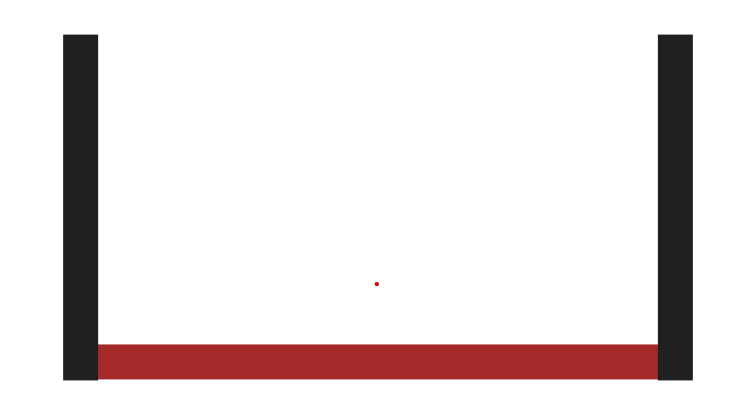

PyToon Documentation¶

from pytoon import circle
circle().svg()
Quickstart¶
The code and resulting image above show the simplest possible use case of
PyToon.
The .svg method renders the image represented by an object of circle
class in the SVG
graphics language, with the default local file name pytoon_graphic.svg.
Failing any supplied arguments, you get a “default circle”
(black, 1-point outline, with no fill, and a radius of 100 points).
An object of circle class is an example of an entity.
An entity is any “drawable” object.
composite images¶
The example above is inherently boring, since there is only one entity in the
image.
A composite entity is drawable too, and simply draws its components, which
are given in a list (or any other iterable), as so:
{kind=link}
from pytoon import composite, line, circle
composite([
line(begin=(-150,0), end=(+150,0), lstyle=(3,"#A0522D")),
circle(center=(-30,0), radius=100, lstyle=False, fstyle="salmon"),
circle(center=(+30,0), radius=100, lstyle=False, fstyle="0.8 * green")
]).svg("two-circles")
Though the syntax for the above is largely self-evident, given that the output is graphical, a couple of points deserve mention:
values for the
lstyleandfstylearguments, which style lines and fills, respectively, have a liberal interpretation (covered in the full documentation);0,"none"andFalsewould all work to turn off the outlines of the circles, and the order inside the tuple defining the brown line (weight and color, respectively) could be swapped.color syntax is also flexible; RGB codes or named colors can be used, and the
0.8multiplier for the green color causes it to be semi-transparent.entities are layered in the order they are defined (last given is on top of all others).
this time, a file name (→
two-circles.svg) is specified for the output.
copy-generated entities¶
So far, this is just a declarative graphics language mapped to python, so let’s have some fun using its python-ness. To start with, every entity is callable, acting as a generator for copies of itself. The call signature is the same as for instantiation, where any supplied arguments override the “defaults” set by the called object. So we could have written the above as:
from pytoon import composite, line, circle
my_circle = circle(radius=100, lstyle=False, fstyle="salmon")
composite([
line(begin=(-150,0), end=(+150,0), lstyle=(3,"#A0522D")),
my_circle(center=(-30,0)),
my_circle(center=(+30,0), fstyle="0.8 * green")
]).svg("two-circles")
variable substitution¶
This is even more powerful when combined with variable substitution, to adjust
one aspect of a copied composite, for example.
{kind=link}
from pytoon import composite, line, circle
sub_image = composite([
line(begin=(-150,0), end=(+150,0), lstyle=("WEIGHT","#A0522D")),
circle(center=(-30,0), radius=100, lstyle=False, fstyle="salmon"),
circle(center=(+30,0), radius=100, lstyle=False, fstyle="GREEN")
])
image = composite([
sub_image(GREEN="0.1*green"),
sub_image(GREEN="0.2*green").T( 0, 110),
sub_image(GREEN="0.3*green").T( 0, 220),
sub_image(GREEN="0.4*green").T(300, 0),
sub_image(GREEN="0.5*green").T(300, 110),
sub_image(GREEN="0.6*green").T(300, 220),
sub_image(GREEN="0.7*green").T(600, 0),
sub_image(GREEN="0.8*green").T(600, 110),
sub_image(GREEN="0.9*green").T(600, "Two20")
], WEIGHT=30, Two20=220).R(20)
image.svg()
To delay the specification of a property, simply set it equal to a string
that obeys the rules for a valid identifier in python,
such as WEIGHT, GREEN, or Two20 in the forgoing
(capitalization is just one way to eliminate name clashes).
When a keyword argument with that identifier is later passed to a
copy-generator call, or to a composite that contains that object, the
value of that argument is substituted.
The seemingly pointless use of Two20 is just to demonstrate that this
works pretty much everywhere, all the time.
There are even more advanced uses of lazy evaluation involving functions
of variables that are covered in the full documentation.
simple transformations¶
In the above example, we also see the .T and .R methods of entities
being called. These are shorthand for “translate” and “rotate,” respectively,
and their effect is to return a copy of the entity, transformed as specified.
There is also a .S method that scales the image.
animation¶
One of the most powerful features is the way that the heavy lifting is done by python to translate arbitrary user-defined functions into animation paths and attributes.
{kind=link}
import math
from pytoon import composite, circle, polygon, animated
def c(_t_):
x = 50 * math.cos(2*math.pi * _t_)
return (x,0)
image = composite([
polygon(points=[(-200,-110), (-200,110), (200,110), (200,-110)], lstyle=False, fstyle="tan"),
circle(center=animated(c,Dt=0.05))
])
image.svg(time=(0,1), duration=2)
(As embedded, this animation plays with no user interaction. More is said about control in the full documentation.)
The user-defined function c in the code above defines an oscillatory
trajectory.
The time argument for such a function must be named _t_ (chosen to stay out
of the way of any variables a user might want to define).
The snippet center=animated(c,Dt=0.05) is where the function c is
applied specifically to the center of the circle.
The user, generally aware of the contents of c decides on the time step
(Dt=0.05) necessary for a good rendering of this trajectory.
All the rest is figured out by PyToon.
The time interval to be rendered
(_t_ → 0 through _t_ → 1)
is specified by the time=(0,1) argument to the .svg call. This
“internal” time is in arbitrary units of the user’s choice, but the rendered
interval will play out over 2 seconds of real time, as specified by
duration=2.
grand finale¶
{kind=link}
So much for the simple. How about the complex?
The above image (about 2 MB, rendered) was generated by about 50 lines of
python code, about half
of which were needed to compute the dynamic, area-conserving transformation
that physically defines the wave.
Except for importing pytoon and things
from the standard library, it is completely free-standing
(the code appears in the dicussion of tranformations in the full documentation).
Notice how the centers of the circles move with the distortion field that
makes the background wave, but they are not themselves distorted (unlike the
seaweed). You have that much control!
Complete Guide¶
 This documentation and its components (text, images, and code) are licensed under a
Creative Commons Attribution-ShareAlike 4.0 International License
.
This documentation and its components (text, images, and code) are licensed under a
Creative Commons Attribution-ShareAlike 4.0 International License
.